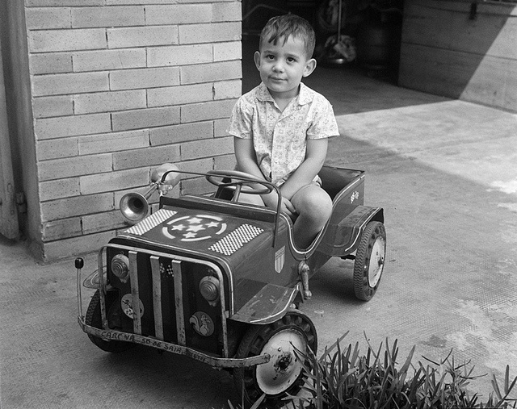

Biografia de Ayrton Senna
Ayrton Senna
Ayrton Senna da Silva ONM • ComRB • CvMA • OME (São Paulo, 21 de março de 1960 – Bolonha, 1 de maio de 1994) foi
um piloto de Fórmula 1, empresário e filantropo brasileiro. Senna foi campeão da categoria de piloto três vezes,
em 1988, 1990 e 1991. Começou sua carreira competindo no kart em 1973 e em "carros de fórmula" em 1981, quando
venceu as Fórmulas Ford 1600 e 2000. Em 1983 alcançou o título de campeão do Campeonato Britânico de Fórmula 3
batendo vários recordes. Seu desempenho impulsionou sua ascensão à Fórmula 1, fazendo sua primeira aparição na
categoria no Grande Prêmio do Brasil de 1984 pela equipe Toleman-Hart. Em sua primeira temporada, Senna pontuou
em cinco corridas, fechando o ano com treze pontos e a nona posição na classificação geral dos pilotos. No ano
seguinte, ingressou na Lotus-Renault, pela qual venceu seis grandes prêmios ao longo de três temporadas.
Em 1988, juntou-se ao francês Alain Prost na McLaren-Honda, com o qual teve grande rivalidade. Senna venceu oito
etapas daquela temporada e sagrou-se campeão mundial pela primeira vez. Após a polêmica final de 1989 com Prost
que resultou na segunda colocação do torneio, ele retomou o título em 1990, vencendo novamente na temporada
seguinte, tornando-se o piloto mais jovem a conquistar um tricampeonato na Fórmula 1 até então. Em 1993, Senna
foi vice-campeão, vencendo cinco corridas. Transferiu-se para a Williams em 1994, onde disputou apenas três
etapas, a última sendo o Grande Prêmio de San Marino, onde se acidentou e morreu, no Circuito de Ímola.
Infância e juventude
Primeiros anos

Filho do empresário Milton Guirado Theodoro da Silva e de Neyde Joanna Senna da Silva,
Ayrton Senna nasceu em 21 de março de 1960, na Maternidade de São Paulo, no bairro de Cerqueira César,
São
Paulo.[13][14] A mãe de Senna era neta de imigrantes italianos e o seu pai era filho de uma espanhola
(de
Tíjola, em Almeria) com um paulista.[15]
Passou sua infância e adolescência na Zona Norte de São Paulo, cresceu no bairro onde seu pai, Milton da
Silva e seu avô paterno, Antônio Teodoro da Silva nasceram, Santana.[16] [17] Morou no centro do bairro
nos
primeiros quatro anos de vida, na casa que pertencia seu avô, nas imediações do Aeroporto Campo de
Marte.[18] Já no Jardim São Paulo viveu dos quatro aos doze anos, entre as décadas de 1960 e 1970,
mudando-se posteriormente para o distrito do Tremembé.[19] Durante sua formação escolar, estudou em
instituições tradicionais da região, como o Colégio Jardim São Paulo, onde estudou no pré-escolar,[20] e
no
extinto Colégio Santana (1º ao 4º ano), saindo pois a instituição católica não possuia turmas masculinas
no
ginásio.[21] Concluiu seus estudos no Colégio Rio Branco em Higienópolis.[22][23]